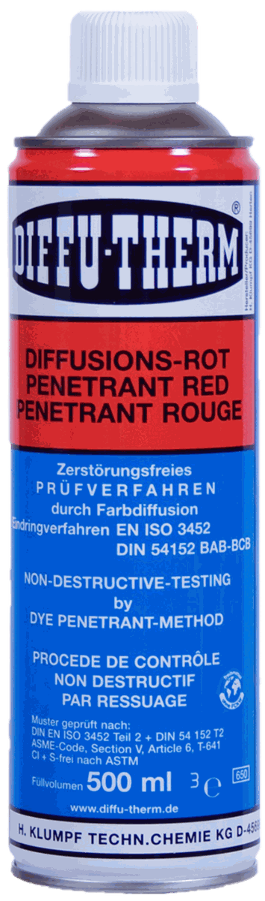
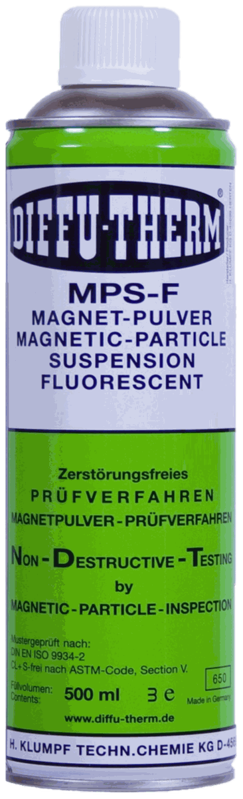
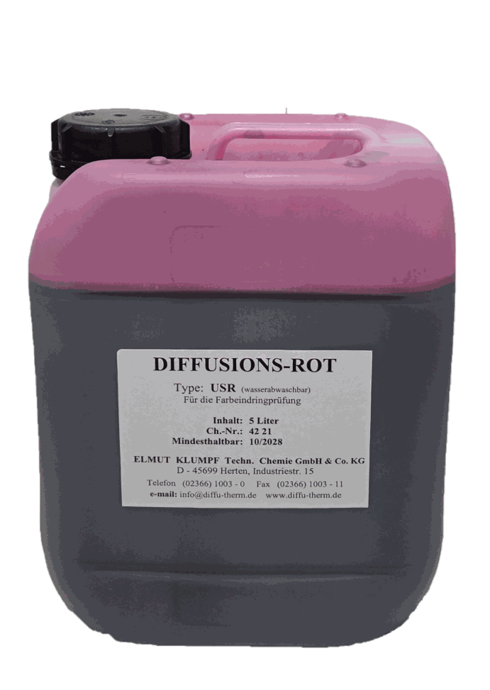
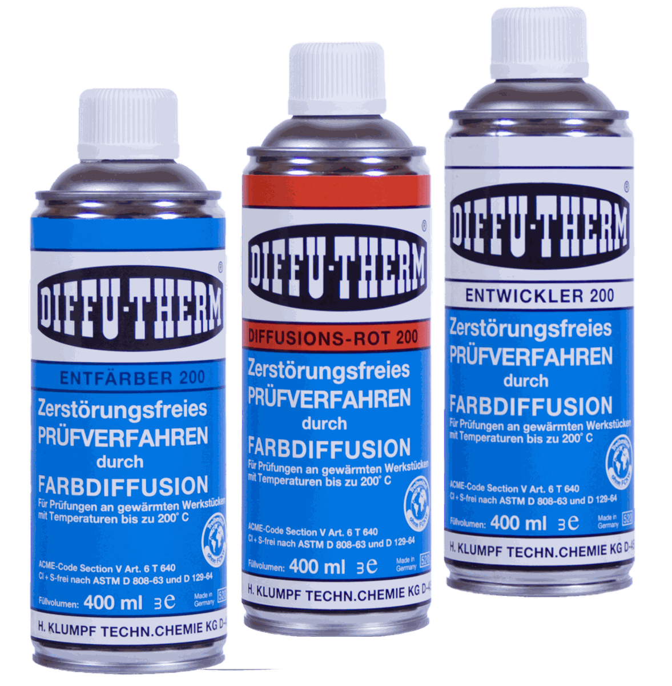

EN 10204 — 2.1, 2.2, 3.1, 3.2 khác nhau thế nào và khi nào dự án bắt buộc 3.1B
Giải thích bốn loại chứng từ theo EN 10204, vì sao 3.1B là loại hay bị yêu cầu nhất trong dự án dầu khí, và cách ghi đúng yêu cầu chứng từ vào RFQ vật tư NDT.
Các bài viết hỗ trợ SEO và mua hàng kỹ thuật, liên kết về danh mục và mã sản phẩm có khả năng chuyển đổi RFQ.
Mỗi bài nhắm một intent hẹp: tiêu chuẩn, chứng từ, quy trình hiện trường, định mức vật tư hoặc logistics.

Giải thích bốn loại chứng từ theo EN 10204, vì sao 3.1B là loại hay bị yêu cầu nhất trong dự án dầu khí, và cách ghi đúng yêu cầu chứng từ vào RFQ vật tư NDT.
Giải thích cơ chế ăn mòn ứng suất và giòn do lưu huỳnh, halogen tồn dư từ chất thẩm thấu và bột từ; vật liệu nào bị giới hạn, cần hỏi chứng từ gì và cách ghi vào RFQ.

Ba loại chỉ thị trong PT và MT — chỉ thị thật, chỉ thị không liên quan và chỉ thị giả; nguyên nhân từng loại, cách xác nhận lại và cách tránh báo cáo sai.
So sánh kiểm tra thẩm thấu PT và kiểm tra hạt từ MT theo vật liệu, loại khuyết tật, điều kiện hiện trường và chi phí; kèm cây quyết định và các trường hợp phải dùng cả hai.
Cách ước tính số bình xịt penetrant, developer và cleaner cần cho một khối lượng kiểm tra PT; các yếu tố làm tăng tiêu hao và cách tự hiệu chuẩn định mức cho nhà máy của mình.

Vì sao bình xịt NDT là hàng nguy hiểm khi vận chuyển, đọc mục 14 của SDS thế nào, hạn chế với vận tải hàng không, và cách chọn mã hoặc quy cách để giảm rắc rối logistics.

Vật tư NDT hết hạn ảnh hưởng kết quả kiểm tra thế nào, cách quản lý shelf-life theo lô, điều kiện lưu kho ở khí hậu Việt Nam, và nghĩa vụ xử lý chất thải sau kiểm tra.
Danh sách kiểm tra đầy đủ khi lập BOM vật tư kiểm tra không phá hủy cho dự án chế tạo skid, bồn bể, đường ống: từ vật liệu, tiêu chuẩn, chứng từ đến thiết bị đo và vật tư phụ.
Hình dạng, vị trí và hướng của chỉ thị PT/MT cho biết loại nứt và nguyên nhân gây ra nó. Cách phân biệt nứt mỏi, nứt nóng, nứt nguội, nứt miệng hố và nứt ăn mòn ứng suất tại hiện trường.

Kiểm tra bề mặt ở công đoạn nào, tìm khuyết tật gì, dùng PT hay MT, vì sao phải chờ thời gian trễ trước khi kiểm tra, và cách xếp các điểm dừng kiểm tra vào ITP.
Hai hệ tiêu chuẩn kiểm tra thẩm thấu khác nhau ở chỗ nào, vì sao không thể chọn cái dễ hơn, cách lập bảng đối chiếu tham số và những chỗ hay xung đột trong dự án đa tiêu chuẩn.
Hệ vật tư thẩm thấu được phê duyệt theo bộ, không theo từng sản phẩm rời. Bốn rủi ro khi trộn vật tư khác hãng, ba trường hợp ngoại lệ, và cách xử lý khi buộc phải thay thế giữa chừng.
Từ dư sau kiểm tra MT gây arc blow khi hàn, mài mòn ở chi tiết chuyển động và sai lệch thiết bị đo. Khi nào phải khử từ, các phương pháp khử, cách đo từ dư và cách ghi vào biên bản.